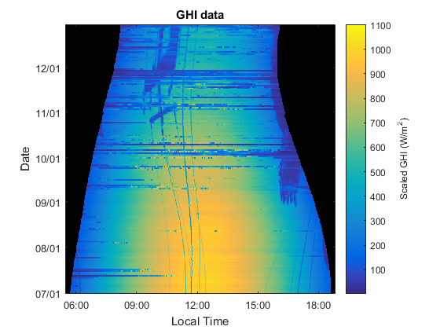
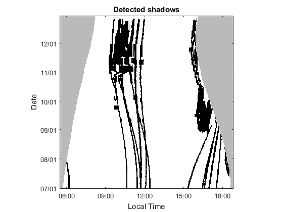

pvl_detect_shadows
Identify shading on a GHI instrument from nearby structures such as wires and poles.
Contents
Syntax
out = pvl_detect_shadows(Time, GHI, dbg)
Description
pvl_detect_shadows uses morphological image processing methods to identify shadows from fixed local objects in GHI data. GHI data are are assumed to be reasonably complete with relatively few missing values and at a fixed time interval nominally of 1 minute over the course of several months. Shadows are assumed to be relatively short duration. The algorithm forms a 2D image of the GHI data by arranging time of day along the x-axis and day of year along the y-axis. Rapid change in GHI in the x-direction is used to identify edges of shadows; continuity in the y-direction is used to separate local object shading from cloud shadows.
Inputs
- Time - a K x 1 vector of datetimes in UTC corresponding to the measured GHI
- GHI - a K x 1 vector of measured GHI (W/m2)
- interval - an integer number of minutes between data points
- site_info - a structure with the following fields:
- site_info.lat - site latitude
- site_info.long - site longitude, positive is east of prime meridian
- site_info.alt - site altitude in meters
- UTCoffset - in hours, positive for east of prime meridian
- dbg - a boolean; additional plots are created if set to True
Output
- out - a structure with the following fields:
- *|out.localtime - a K x 1 vector of datetime in adjusted by UTCoffset
- out.GHI - copy of input GHI in M x N = (samples per day) x (days) format
- out.boosted - M x N array of GHI after adjustment for dynamic range
- out.alpha - scalar used to adjust dynamic range
- out.gradient - M x N array of morphological gradient of boosted
- out.clouds - M x N array of boolean with True indicating non-clearsky conditions
- out.night - M x N array of boolean with True indicating clearsky GHI<100 W/m2
- thresholded - M x N array of boolean with True indicating a large morphological gradient
- wires - M x N array of boolean with True indicating a shadow
Notes
Morphological image functions are defined as methods in class GHIImage. Method names are common in literature, and the Matlab Image Processing toolbox uses the common naming convention. To avoid namespace conflict with the Matlab toolbox, the PVLib implementation uses a class definition.
References
[1] Martin, C. E., Hansen, C. W., An Image Processing Algorithm to Identify Near-Field Shading in Irradiance Measurements, preprint 2016.
[2] Reno, M.J. and C.W. Hansen, "Identification of periods of clear sky irradiance in time series of GHI measurements" Renewable Energy, v90, p. 520-531, 2016.
Load example data
fprintf('Loading data...'); load('SMUD22_GHI_data.mat'); data_interval = 1; % minutes, time between GHI samples x = pvl_detect_shadows(data.Time, data.GHI, data_interval, data.info, false); tmp=x.GHI+1; % add 1 to avoid zeros, which can be a problem for the image tmp(x.night)=NaN; make_shadow_figure(tmp, x.localtime,-1); c=colorbar; c.Label.String = 'Scaled GHI (W/m^2)'; title('GHI data') % figure showing only wires tmp=100*x.wires; tmp(x.night)=18; make_shadow_figure(tmp,x.localtime,1); title('Detected shadows');
Loading data... Computing clear sky estimate... Removing clouds... 